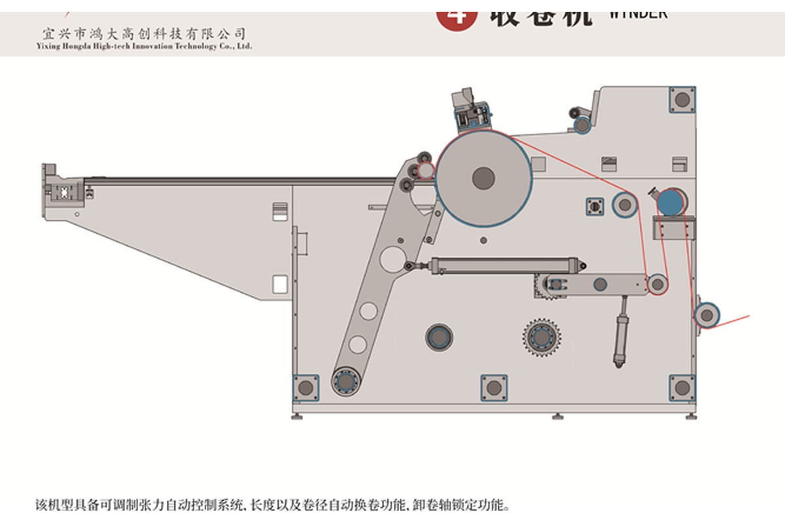
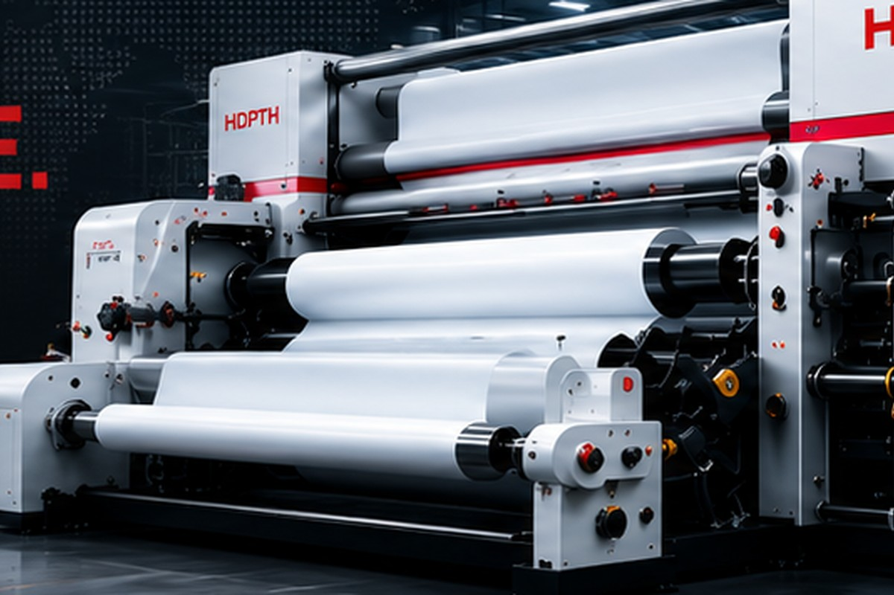

High-Speed Slitting Machines
Clean cutting, stable tension and accurate rewinding for nonwoven and flexible materials.
View detailHDPTH manufactures high-speed slitting machines, nonwoven rewinding machines, perforating production lines, automatic knife systems and auxiliary equipment for global B2B buyers.
Product Categories
Core product pages now use confirmed product-manual parameters. Share material, width, speed and roll requirements with Wilson Wu on WhatsApp +86 13645700210 for configuration advice.
Clean cutting, stable tension and accurate rewinding for nonwoven and flexible materials.
View detail
Reliable rewinding equipment for consistent roll formation and downstream production needs.
View detail
Knife positioning support for quicker setup, precise cutting and repeatable production.
View detail
Custom perforating solutions for disposable, hygiene and flexible material applications.
Request details
Integrated systems for plants that need compact layouts and efficient roll converting.
Request details
Universal shaft extractors, edge trim recovery systems and supporting converting equipment.
Request details